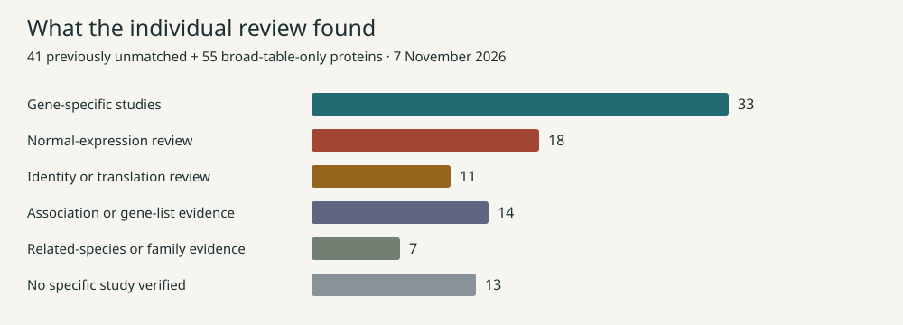
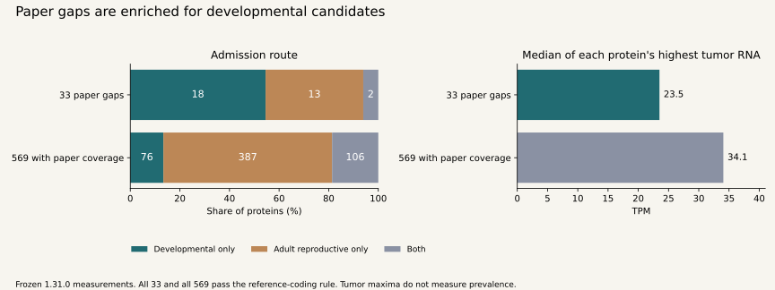
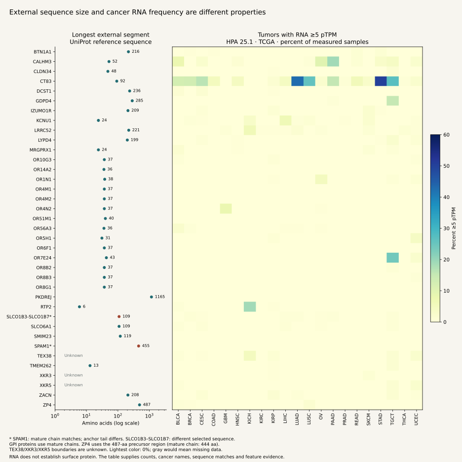
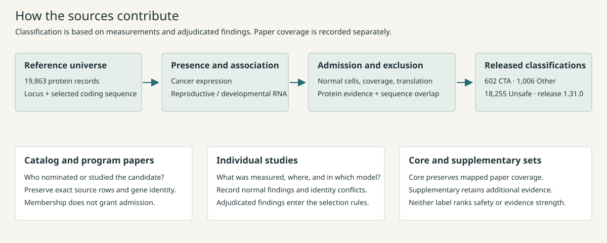

Missed target studies
ZP4 has preclinical CAR-T experiments. TGM4 has human immune-recognition experiments. CRIPTO3 has oncofetal protein studies with reagents that distinguish it from CRIPTO1.
Literature review · 7 November 2026
Individual assessments of the 41 previously unmatched proteins and 55 found only in a broad screening table, with one registry for catalog papers, biological studies and normal-tissue findings.
All candidate measurements · Released classification funnel · Complete evidence registry
This is an evidence update to release 1.31.0. Its 602 CTA classifications are frozen. The new normal-expression and identity findings below must be adjudicated before the next classification release.
“No match” described the previous collection. It did not mean that the protein had never appeared in a paper. These assessments distinguish human studies, gene-list associations, unresolved copies, and animal or family evidence.

Download figure (SVG) · Download all 96 assessments (CSV)
ZP4 has preclinical CAR-T experiments. TGM4 has human immune-recognition experiments. CRIPTO3 has oncofetal protein studies with reagents that distinguish it from CRIPTO1.
BECN2 and SRY have adult human brain protein findings. SLCO1B3–SLCO1B7 has human hepatocyte protein evidence. These findings need a recorded classification decision.
TAF11-like brain RNA does not distinguish the individual copies. FRG2 studies challenge a protein-coding interpretation. RLN1 experiments separate RNA from selective protein detection.
| Protein / locus | Assessment | What the papers establish | Sources and assay scope |
|---|
Most are reasonable discovery CTAs. All 33 pass the released coding-reference and expression rules. Their missing papers make their biology and protein-level evidence less developed; publication coverage is not an admission requirement.
The gaps are concentrated in embryo-associated programs, recently annotated copies and poorly characterized reproductive proteins. Eighteen enter through developmental expression alone. Their median highest tumor RNA is 23.5 TPM, compared with 34.1 TPM for the 569 covered proteins. Ten of 33 have a highest tumor value below 10 TPM, compared with 93 of 569. These maxima describe observed expression, not how often tumors express the protein.
Five deserve normal-cell adjudication: CALHM3 has a mouse taste-cell function; PRAMEF18 and TAF11L11/13/14 have unresolved family-level human normal RNA. ATF7-NPFF and ENSG00000273155 separately need exact-product attribution. The five other unnamed loci have little characterization, not a demonstrated coding failure.

Download comparison figure · Download all 33 assessments and measurements
| Protein / locus | Biology and measured support | Assessment and next step | Related evidence |
|---|
Among the 96 reviews, 18 raise normal-expression questions and 11 concern identity or translation. A direct adult normal-protein finding, a shared-copy RNA signal and an unnamed coding record require different decisions.
Download all 29 findings, actions and citations
| Protein / locus | Concern and observation | Next action | Sources |
|---|
Secretion, extracellular detection and an exposed cell-surface protein are different properties. The table separates them and records the source, evidence type, cell model and exact gene mapping. An integral plasma-membrane annotation identifies a possible external domain; it does not establish that a particular tumor epitope is accessible.
Among the 33 paper gaps, DEFB113 and LCN9 have secretion annotations. DEFB113 is annotated by similarity; LCN9's location has no evidence code. OOSP4B has a shared-entry secretion prediction. CALHM3 has a plasma-membrane annotation by similarity. Human SPADH secretion remains unverified.
Across the full set, ZP4 has preclinical CAR-T recognition experiments, BTN1A1 has antibody-blockade experiments, and FAM237A is a processed secreted ligand in engineered cells. CRIPTO3 is detected in serum; that result alone does not establish an exposed tumor-cell epitope. Normal-expression concerns remain visible alongside localization.
| Protein / locus | Location and mapping | Evidence and source details | Primary studies and concerns |
|---|
Download localization for all 602 CTAs · UniProt localization documentation · HPA secretome definitions
37 proteins have surface or integral plasma-membrane annotations. Exact extracellular boundaries are available for 34 UniProt sequences. Thirty-five canonical sequences match the selected OncoRef sequence; SPAM1 shares the mature chain but differs in its anchor tail, and SLCO1B3–SLCO1B7 differs substantially. TEX38, XKR3 and XKR5 have no annotated outside-facing boundaries.
Sizes below count amino acids, with inclusive coordinates. Total adds all annotated external segments; longest is the largest continuous external segment. Several loops do not form one continuous domain. GPI-protein sizes use the mature chain. ZP4’s precursor region is 487 aa; its exact annotated mature matrix chain is 444 aa. These are sequence annotations, not epitope-accessibility measurements.
Cancer frequency is measured separately. HPA 25.1 provides RNA for all 37 proteins across 21 TCGA cancer types, with a separate validation collection. Counts show tumors at ≥1 and ≥5 native pTPM divided by measured tumors. Neither cutoff is a treatment threshold. This panel does not cover every cancer, including NUTM. Gene-level RNA does not establish a particular proteoform, surface abundance, or the fraction of malignant cells positive.
HPA IHC covers 14 of the 37 proteins in 20 cancer categories. Those are scored-patient staining counts from a separate collection. They do not establish antibody selectivity or tumor-cell surface localization. A dash means no measurement; 0/N means measured with no positives at that cutoff.

Download figure (SVG) · All domain coordinates and evidence (CSV) · All RNA counts (CSV) · All staining counts (CSV)
| Protein and sequence | Extracellular size | Tumor RNA: ≥1 / ≥5 pTPM | Staining, evidence and concerns |
|---|
The measurement datasets construct and test the candidates. Catalog and program papers supply published provenance. Individual studies add function, protein evidence, immune recognition or normal-expression findings. A paper citation never substitutes for the admission tests.

Download source-role figure (SVG)
Measurement datasets and curated evidence ledgers support the selection gates for the whole candidate universe. They are separate from the paper reading set.
Core means a compact set that covers every protein with eligible paper evidence in this collection. Supplementary means another core paper covers its names, or its job is different—such as an upstream gene-set definition, a normal-tissue assay with unresolved identity, or an animal experiment. Both sets remain in the registry and both can supply findings.
“Covered by” concerns names only. Reusing a published gene set is not independent replication. A normal-expression finding remains relevant even when its paper adds no new names.
| Paper / source | Role and retained evidence | Coverage | Overlap |
|---|
Coverage includes mapped catalog membership, defined program membership, and named human studies—including explicitly labelled genomic associations. It does not imply experimental protein detection. Broad screening rows, unresolved family assays and animal-only studies do not supply exact-human coverage.
| Protein / locus | Exact-human paper or catalog links | Other evidence and review |
|---|
All 96 proteins were searched in Europe PMC by exact gene symbols, recorded aliases and Ensembl IDs. The search date cutoff was 7 November 2026. Each protein has a title/abstract query and an open-access full-text query; targeted follow-up searches and annotation-linked references supplied additional papers. Ranked retrieval limits and query truncation are recorded. Search results are leads, not accepted findings.
Each individual assessment states what was measured, which species or cell model was used, and whether the experiment resolves the exact locus or proteoform. The source table distinguishes inspected full-text sections from abstracts/indexed records and earlier source reviews. “No specific study verified” is the result of these recorded searches.
Complete Chew Table S3 and Smith Table S3A/B rows are retained, including non-gene and unmapped entries. Smith S3A credits Taubenschmid-Stowers 2022; S3B annotates the program rather than adding an independent nomination. Chew S1 contains 12,697 scored genes and stays a background screen. It is excluded from the core coverage calculation.
The core calculation selects mandatory unique contributors, fills remaining coverage deterministically, then removes redundant papers. Every retained core paper has a listed contribution that would be lost if it were removed. This establishes an inclusion-minimal cover; it does not claim the smallest possible number of papers.
192 search receipts · Targeted retrieval receipts · Full-text availability · Input and output hashes · Offline report builder